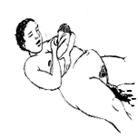
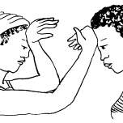

{% extends "templates.jinja/base.page-with-navbar.html" %}
{% block id %}Danger_Signs_After_Birth{% endblock %}
		{% block content %}
			<h2 class="hm-content-menuheading">Danger Signs<br>After Birth</h2>
			
			<ul data-role="listview" data-theme="c" class="hm-menu" data-inset="true">
				<li><a href="Bleeding-After_Birth.html" rel="external"><span class="hm-menu-linkwrapper hm-menu-linkwrapper-singleline">Bleeding</span></a></li>
				<li><a href="Fever_After_Birth.html" rel="external"><span class="hm-menu-linkwrapper hm-menu-linkwrapper-singleline">Fever</span></a></li>
			</ul>
		{% endblock %}
